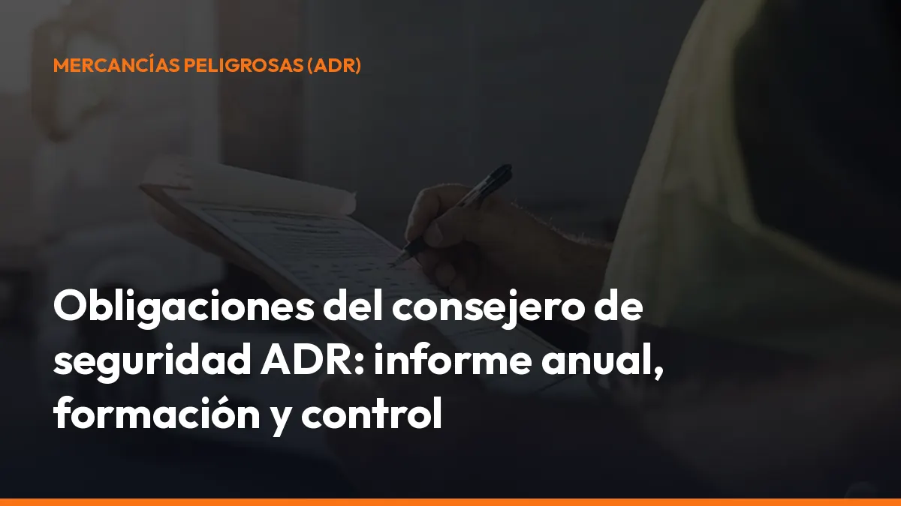

Obligaciones del consejero de seguridad ADR: informe anual, formación y control

La figura del consejero de seguridad ADR no es un trámite opcional cuando la actividad está sujeta a esta obligación. Su trabajo consiste en prevenir riesgos, revisar procedimientos y ayudarte a demostrar que la empresa opera conforme a la normativa.
En este artículo conocerás las principales obligaciones del consejero de seguridad, qué debe incluir el informe anual, cómo funciona la formación y qué consecuencias puede tener no designarlo.
Importante: para el transporte por carretera, el marco actual debe consultarse principalmente en el ADR y en el Real Decreto 97/2014. El Real Decreto 1566/1999 quedó limitado, en gran parte, al transporte por ferrocarril y por vía navegable. La Orden FOM/605/2004 continúa siendo una referencia en materia de capacitación, según las disposiciones vigentes.
¿Qué es un consejero de seguridad ADR?
El consejero de seguridad ADR es la persona que asesora a la empresa y supervisa que sus operaciones con mercancías peligrosas se realizan de forma segura y conforme al ADR.
Puede ser:
- Personal interno: el titular, director o trabajador de la empresa.
- Profesional externo: una persona o entidad contratada para prestar este servicio.
- Consejero especializado: con habilitación para las clases y actividades que necesita tu empresa.
Para ejercer, debe superar el examen correspondiente y disponer de un certificado de formación válido durante cinco años.
Su función no consiste únicamente en preparar documentos. Debe conocer cómo trabajas en la práctica: qué mercancías manejas, cómo se cargan, qué vehículos utilizas, qué personal interviene y qué controles aplicas antes de iniciar cada operación.
Comprueba ahora si tu actividad necesita consejero y evita trabajar sin cobertura documental.
Las principales obligaciones del consejero de seguridad
1. Asesorar a la dirección de la empresa
El consejero debe asesorar a la dirección sobre todas las cuestiones relacionadas con el transporte de mercancías peligrosas.
Esto incluye proponer medidas para:
- Reducir riesgos durante la carga y la descarga.
- Elegir vehículos y equipos adecuados.
- Cumplir las condiciones del ADR.
- Corregir incumplimientos detectados.
- Mejorar los procedimientos internos.
- Preparar la respuesta ante accidentes o incidentes.
La dirección debe recibir información clara y útil. No basta con conservar un certificado. El consejero debe ayudarte a tomar decisiones correctas antes de que aparezca un problema durante una inspección o en carretera.
2. Verificar los procedimientos de trabajo
El consejero de seguridad ADR debe revisar que los procedimientos de la empresa se aplican correctamente.
Entre otros aspectos, debe comprobar:
- Clasificación: que la mercancía esté correctamente identificada.
- Documentación: que la carta de porte y los documentos exigibles estén completos.
- Embalaje: que los envases sean adecuados y estén correctamente marcados.
- Etiquetado: que los bultos y vehículos tengan la señalización correspondiente.
- Carga: que se respeten las comprobaciones previas y la compatibilidad.
- Estiba: que los bultos estén colocados y sujetos de forma segura.
- Vehículos: que dispongan de los equipos y certificados necesarios.
- Conductores: que tengan la formación y autorización exigibles.
- Emergencias: que existan instrucciones claras para actuar ante un accidente.
La utilidad práctica es directa: una revisión periódica permite detectar errores antes de que provoquen una inmovilización, una sanción o un riesgo para las personas y el medio ambiente.
3. Asegurar la formación del personal
Una de las obligaciones del consejero de seguridad es verificar que todas las personas que intervienen en las operaciones reciben la formación adecuada.
No solo debe tenerse en cuenta al conductor. También pueden necesitar formación:
- Personal de almacén.
- Cargadores y descargadores.
- Expedidores.
- Responsables de logística.
- Personal que prepara envases o embalajes.
- Trabajadores que intervienen en emergencias.
- Personal encargado de revisar la documentación.
La formación debe adaptarse a las funciones reales de cada persona. Un trabajador que etiqueta bultos no necesita exactamente la misma preparación que un conductor que transporta mercancías peligrosas en cisterna.
El consejero debe comprobar que la formación:
- Es adecuada para la actividad realizada.
- Está actualizada.
- Se puede acreditar documentalmente.
- Se comunica de forma comprensible.
- Se mantiene registrada para una inspección.
Guarda certificados, registros y documentos de formación en un sistema accesible. Así podrás localizar cada justificante al instante, incluso si la inspección se produce fuera de la oficina.
4. Realizar visitas técnicas a las instalaciones
El Real Decreto 97/2014 establece que el consejero debe realizar, como mínimo:
- Una visita inicial a cada establecimiento o instalación.
- Una visita anual a cada centro donde se desarrollen actividades con mercancías peligrosas.
Cuando el único personal implicado en la descarga sea el de la empresa transportista, la visita puede ser bienal en los supuestos previstos por la normativa. Si se modifican las instalaciones o los procedimientos, pueden ser necesarias visitas adicionales.
Durante la visita, el consejero comprueba el cumplimiento del ADR y detecta incidencias como:
- Falta de equipos de protección.
- Deficiencias en zonas de carga y descarga.
- Procedimientos incompletos.
- Errores de señalización.
- Ausencia de instrucciones escritas.
- Problemas de estiba o sujeción.
- Falta de control sobre la documentación.
Después debe elaborar un informe técnico de evaluación. El informe debe quedar firmado y conservarse en el centro de trabajo o en el domicilio fiscal durante, al menos, un año.
5. Redactar el informe anual de actividades
El informe anual del consejero de seguridad ADR es una de sus obligaciones principales.
Debe reflejar las actividades realizadas por la empresa relacionadas con las mercancías peligrosas, como:
- Expedición.
- Transporte.
- Carga.
- Descarga.
- Embalaje.
- Llenado de cisternas.
- Operaciones vinculadas al transporte.
El contenido debe permitir conocer qué operaciones se han realizado y qué medidas de seguridad se han aplicado.
Como mínimo, debe incluir información sobre:
- Actividad de la empresa: qué operaciones realiza.
- Mercancías: identificación, clases y números ONU.
- Cantidades: mercancías transportadas, cargadas o descargadas.
- Centros de trabajo: instalaciones y áreas revisadas.
- Formación: personal formado y controles realizados.
- Incidencias: incumplimientos, accidentes o situaciones relevantes.
- Medidas correctoras: acciones aplicadas y mejoras propuestas.
- Visitas técnicas: revisiones realizadas durante el año.
El consejero redacta el informe, pero la empresa debe remitirlo al órgano competente de la Comunidad Autónoma donde tenga su domicilio fiscal.
La presentación debe realizarse durante el primer trimestre del año siguiente, normalmente entre el 1 de enero y el 31 de marzo. Además, la empresa debe conservar una copia durante cinco años.
Consulta el procedimiento oficial de informes anuales de mercancías peligrosas del Ministerio de Transportes.
¿Qué ocurre si el consejero causa baja?
Si el consejero deja de prestar servicio, su certificado caduca o la empresa lo sustituye, debe preparar un informe anual parcial con las actividades realizadas durante el periodo en el que estuvo designado.
La empresa debe facilitarle los datos necesarios. El nuevo consejero deberá tener en cuenta esa información al redactar el informe anual completo.
6. Atender a la inspección y preparar informes de accidentes
El consejero de seguridad debe atender los requerimientos de los Servicios de Inspección del Transporte y aportar los datos relacionados con el centro o área de actividad que tenga asignados.
También debe recopilar la información necesaria cuando se produzca un accidente o incidente relacionado con mercancías peligrosas.
Si el suceso es notificable conforme al ADR, la empresa debe remitir el informe correspondiente dentro del plazo establecido. El consejero prepara el contenido técnico y lo remite a la dirección de la empresa para que se gestione ante la Administración.
No esperes a sufrir un accidente para ordenar la información. Registra de forma continua:
- Fechas y lugares de las operaciones.
- Mercancías y cantidades.
- Vehículos utilizados.
- Personal participante.
- Incidencias y medidas correctoras.
- Comunicaciones realizadas.
- Documentación asociada.
7. Comunicar el nombramiento a la Comunidad Autónoma
Antes de comenzar una actividad que obligue a designar un consejero, la empresa debe comunicar al órgano competente de transportes de su Comunidad Autónoma:
- Los establecimientos o instalaciones afectados.
- El nombre e identidad del consejero.
- Las áreas de gestión asignadas.
- Los cambios o bajas posteriores.
- Las modificaciones de los datos comunicados.
Las áreas de gestión pueden incluir embalado, carga, descarga y transporte.
La persona habilitada también debe figurar en el registro administrativo correspondiente. La comunicación no debe dejarse para después: si trabajas con mercancías peligrosas y el nombramiento no está correctamente comunicado, la empresa puede quedar expuesta durante una inspección.
8. Mantener vigente el certificado durante cinco años
El certificado de formación del consejero tiene una validez de cinco años. Para renovarlo, debe superar una prueba de control durante el último año anterior a la fecha de caducidad. Si no supera la prueba o deja caducar el certificado, no podrá seguir ejerciendo como consejero hasta regularizar su situación.
Controla siempre:
- Fecha de expedición.
- Fecha de caducidad.
- Clases autorizadas.
- Modos de transporte.
- Próximo plazo de renovación.
- Documentación presentada ante la Administración.
Utiliza avisos internos con varios meses de antelación. Renovar al límite puede dejar a la empresa sin consejero válido y obligarte a paralizar operaciones.
La Orden FOM/605/2004 recoge aspectos relacionados con la capacitación profesional de los consejeros. El régimen actual debe interpretarse junto con el ADR y el Real Decreto 97/2014.
¿Qué consecuencias tiene no designar consejero de seguridad?
Si tu empresa está obligada y no designa consejero, puede enfrentarse a consecuencias administrativas y operativas importantes:
- Sanciones económicas: la infracción puede ser grave o muy grave según la conducta y el riesgo generado.
- Problemas durante una inspección: no podrás acreditar quién supervisa el cumplimiento ADR.
- Inmovilización: determinadas deficiencias en la operación pueden impedir que el vehículo continúe.
- Responsabilidades adicionales: un accidente puede agravar las consecuencias si no existían procedimientos ni control.
- Retrasos y pérdidas: una operación detenida afecta a clientes, rutas y entregas.
- Falta de informes: la ausencia de informe anual o de documentación dificulta demostrar el cumplimiento.
El régimen sancionador se aplica conforme a la normativa de transporte terrestre y a las disposiciones específicas sobre mercancías peligrosas. No designar al consejero cuando es obligatorio no es un simple error documental.
Controla la documentación ADR sin complicaciones
El consejero de seguridad necesita información fiable para elaborar sus revisiones e informes. Si la documentación está dispersa entre papeles, correos y teléfonos, aumenta el riesgo de error. Con Mi Carga puedes centralizar la documentación digital del transporte y mantenerla disponible desde el móvil, la cabina o la oficina.
Obtén:
- Disponibilidad inmediata: consulta documentos cuando los necesitas.
- Archivo ordenado: evita perder cartas de porte y justificantes.
- Trazabilidad: conserva el seguimiento de cada operación.
- Modo sin conexión: trabaja incluso cuando estás en carretera.
- Acceso desde el móvil: firma y consulta sin pasar por una tienda.
- Portes ilimitados: trabaja sin límites en los planes disponibles.
Empieza con 10 portes de prueba y, si eres autónomo, puedes contratar el plan desde 10 €/mes + IVA o 90 €/año + IVA en la página de suscripción.
Si sois varios conductores, solicita un presupuesto cerrado con todas las cuentas que necesites.
Checklist rápido de obligaciones
Antes de continuar trabajando con mercancías peligrosas, comprueba:
- Tienes un consejero de seguridad ADR designado.
- El nombramiento está comunicado a la Comunidad Autónoma.
- El certificado del consejero está vigente.
- La empresa dispone de procedimientos ADR actualizados.
- El personal tiene la formación necesaria.
- Se realizan las visitas técnicas obligatorias.
- Se redacta el informe anual.
- El informe se presenta en el primer trimestre.
- La empresa conserva el informe durante cinco años.
- Los documentos están disponibles para una inspección.
- Existe un procedimiento para accidentes e incidencias.
No esperes a que llegue la inspección. Revisa hoy el nombramiento, la formación y el próximo plazo del informe anual. Nosotros te ayudamos a mantener la documentación del transporte organizada, accesible y lista para usar.
¿Hablamos? Escríbenos por WhatsApp o empieza directamente con Mi Carga.
Fuentes normativas
- Real Decreto 97/2014, de 14 de febrero, en el BOE
- Real Decreto 1566/1999, de 8 de octubre, en el BOE
- Orden FOM/605/2004, de 27 de febrero, en el BOE
- Orden FOM/2924/2006, sobre el contenido mínimo del informe anual
La normativa puede actualizarse. Antes de iniciar o modificar una actividad con mercancías peligrosas, comprueba los requisitos aplicables ante el órgano competente de tu Comunidad Autónoma y con un profesional especializado en ADR.
Genera tus 10 primeros documentos gratis con Mi Carga
DeCA, carta de porte y ADR, en PDF, con QR y archivo automático en la nube.
Empezar con 10 documentos gratisArtículo informativo. Consulta siempre el caso concreto de tu operación. ¿Dudas? Escríbenos.